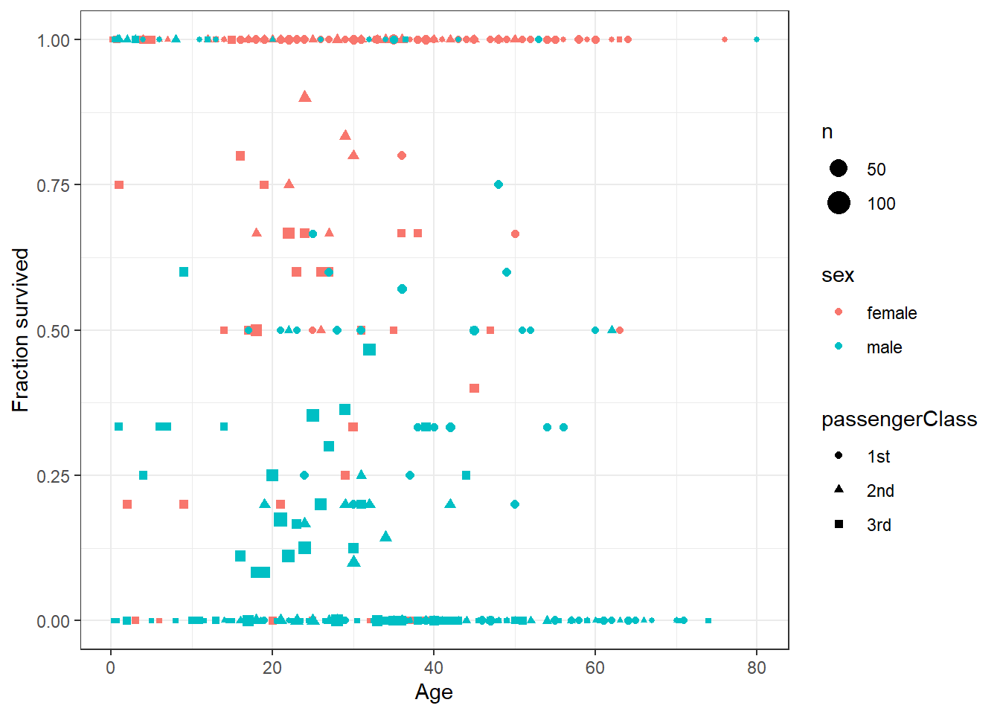
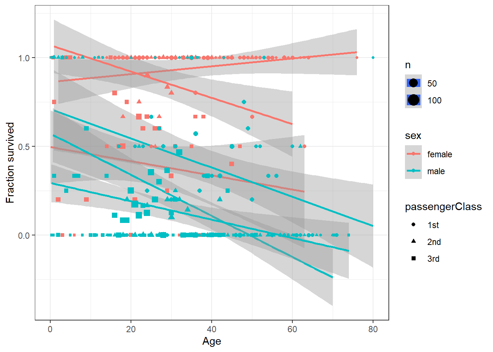
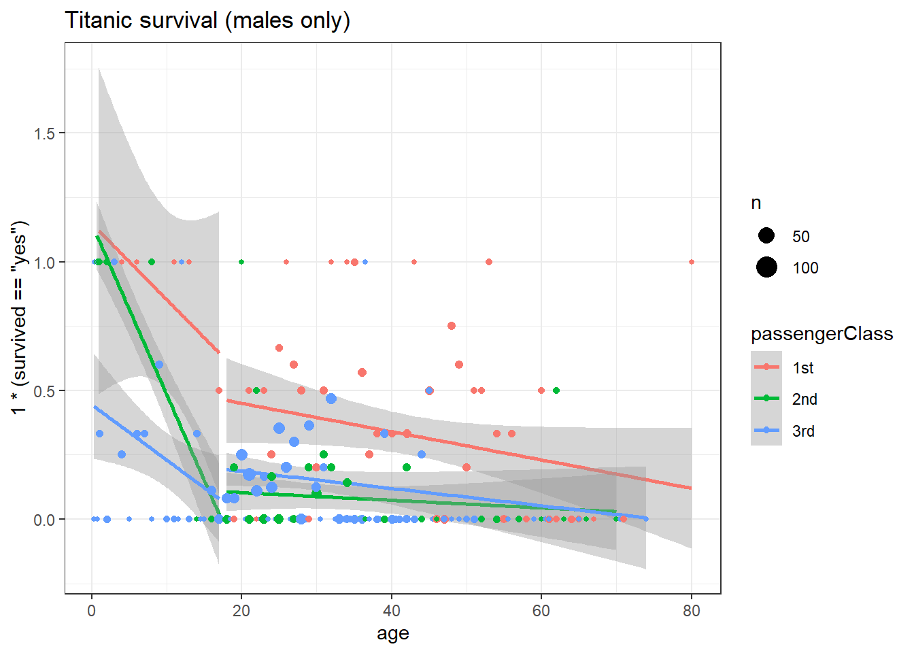
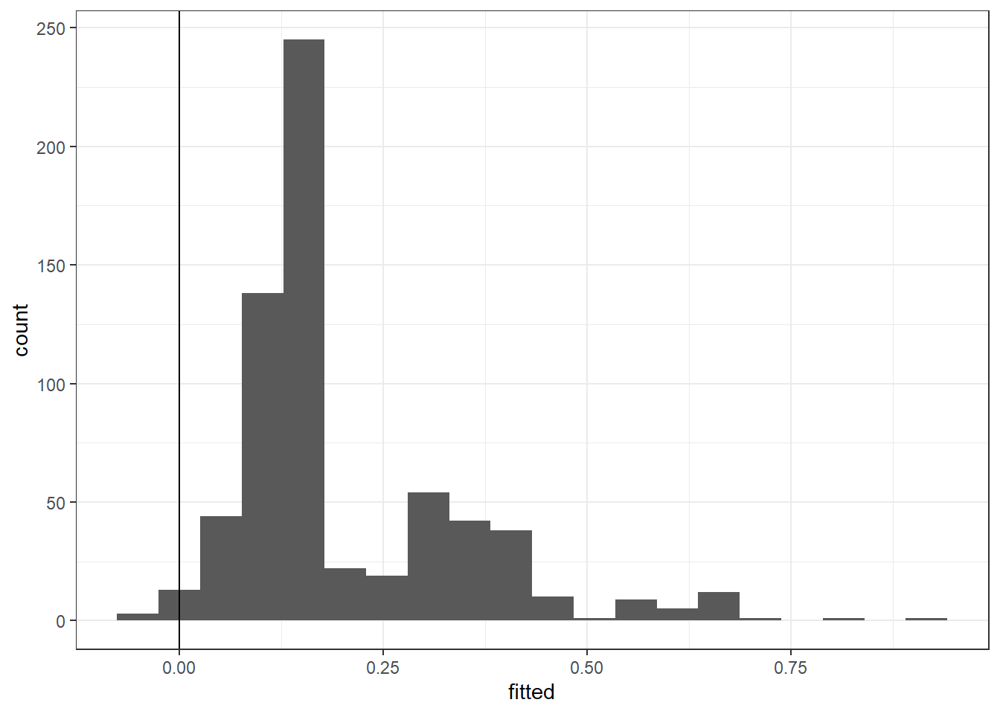
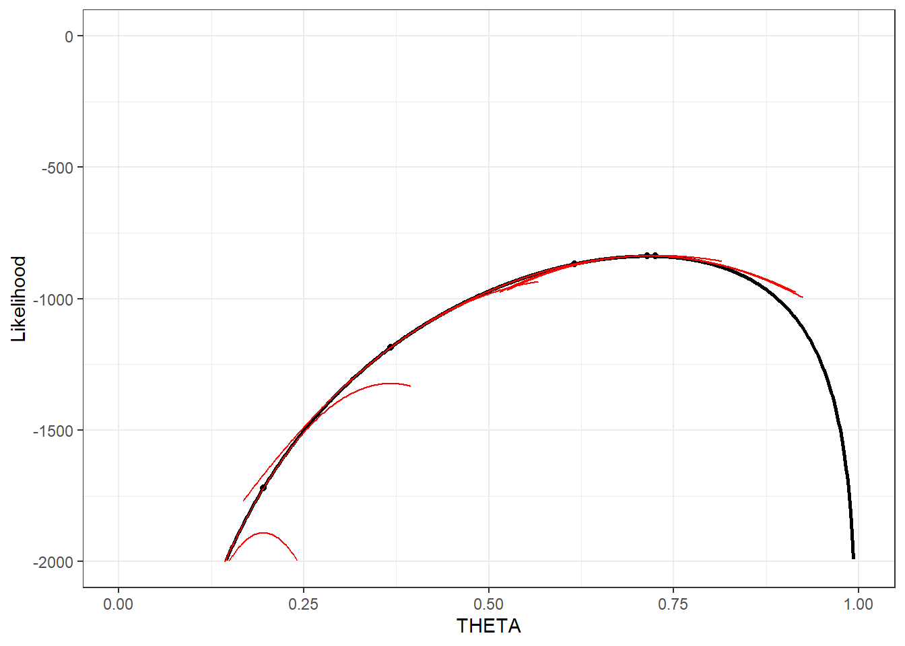
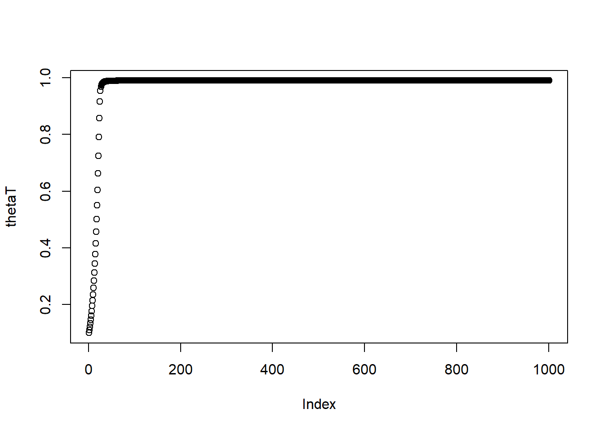

1 Limited dependent variable models
1.1 Some example data
library(dplyr)
library(tidyr)
D<-(data.frame(read.csv("https://vincentarelbundock.github.io/Rdatasets/csv/carData/TitanicSurvival.csv"))
)
DSummary<-D %>% group_by(sex,age,passengerClass) %>% summarize(fracSurvived = mean(1*(survived=="yes")),n=n())
knitr::kable(head(DSummary))| sex | age | passengerClass | fracSurvived | n |
|---|---|---|---|---|
| female | 0.1667 | 3rd | 1.00 | 1 |
| female | 0.7500 | 3rd | 1.00 | 2 |
| female | 0.9167 | 2nd | 1.00 | 1 |
| female | 1.0000 | 2nd | 1.00 | 1 |
| female | 1.0000 | 3rd | 0.75 | 4 |
| female | 2.0000 | 1st | 0.00 | 1 |
library(ggplot2)
(ggplot(DSummary ,aes(y=fracSurvived,x=age,color=sex,shape=passengerClass,size=n))
+geom_point()
+theme_bw()
+xlab("Age")
+ylab("Fraction survived")
+theme_bw()
)
1.2 Analyzing with linear regression
D <- (D
%>% mutate(adult = 1*(age>=18),
class2 = 1*(passengerClass=="2nd"),
class3 = 1*(passengerClass=="3rd"),
male = 1*(sex=="male"),
S = 1*(survived=="yes")
)
)
reg1<-lm(S ~ age + male+class2+class3,data=D)
reg2<-lm(S ~ age + adult+ male+class2+class3,data=D)
reg3<-lm(S ~ age + adult +adult*male + male + class2 + class3,data=D)
library(stargazer)
stargazer(reg1,reg2,reg3,type="html")| Dependent variable: | |||
| S | |||
| (1) | (2) | (3) | |
| age | -0.005*** | -0.004*** | -0.004*** |
| (0.001) | (0.001) | (0.001) | |
| adult | -0.057 | 0.069 | |
| (0.043) | (0.057) | ||
| male | -0.491*** | -0.490*** | -0.296*** |
| (0.026) | (0.026) | (0.063) | |
| class2 | -0.211*** | -0.207*** | -0.202*** |
| (0.035) | (0.035) | (0.035) | |
| class3 | -0.370*** | -0.367*** | -0.362*** |
| (0.033) | (0.033) | (0.032) | |
| adult:male | -0.232*** | ||
| (0.069) | |||
| Constant | 1.105*** | 1.124*** | 1.015*** |
| (0.044) | (0.046) | (0.056) | |
| Observations | 1,046 | 1,046 | 1,046 |
| R2 | 0.369 | 0.370 | 0.377 |
| Adjusted R2 | 0.367 | 0.367 | 0.373 |
| Residual Std. Error | 0.391 (df = 1041) | 0.391 (df = 1040) | 0.389 (df = 1039) |
| F Statistic | 152.257*** (df = 4; 1041) | 122.252*** (df = 5; 1040) | 104.795*** (df = 6; 1039) |
| Note: | p<0.1; p<0.05; p<0.01 | ||
(ggplot(DSummary ,aes(y=fracSurvived,x=age,color=sex,shape=passengerClass,size=n))
+geom_smooth(method="lm")
+geom_point()
+theme_bw()
+xlab("Age")
+ylab("Fraction survived")
+theme_bw()
)
1.3 Focusing on males only
(
ggplot(data=(D %>% filter(sex=="male")), aes(x=age,y=1*(survived=="yes"),group=paste(factor(age<18),passengerClass),color=passengerClass))
+geom_smooth(method="lm",formula = y~ x + (1*(x<18)))
+geom_point(data=(DSummary %>% filter(sex=="male")) ,aes(y=fracSurvived,x=age,color=passengerClass,size=n))
+theme_bw()
+labs(title="Titanic survival (males only)")
)
Dmale<-(D%>%filter(sex=="male")
%>% mutate(AgeMinus18 = age-18)
)
reg1<-lm(S ~ AgeMinus18 + class2+class3,data=Dmale)
reg2<-lm(S ~ AgeMinus18 + adult+class2+class3,data=Dmale)
reg3<-lm(S ~ AgeMinus18 + adult +AgeMinus18*adult+ class2 + class3,data=Dmale)
stargazer(reg1,reg2,reg3,type="html")| Dependent variable: | |||
| S | |||
| (1) | (2) | (3) | |
| AgeMinus18 | -0.007*** | -0.005*** | -0.036*** |
| (0.001) | (0.001) | (0.007) | |
| adult | -0.110** | 0.147* | |
| (0.056) | (0.079) | ||
| class2 | -0.277*** | -0.267*** | -0.265*** |
| (0.046) | (0.046) | (0.045) | |
| class3 | -0.288*** | -0.278*** | -0.259*** |
| (0.042) | (0.042) | (0.041) | |
| AgeMinus18:adult | 0.032*** | ||
| (0.007) | |||
| Constant | 0.513*** | 0.582*** | 0.294*** |
| (0.041) | (0.054) | (0.083) | |
| Observations | 658 | 658 | 658 |
| R2 | 0.090 | 0.095 | 0.123 |
| Adjusted R2 | 0.086 | 0.090 | 0.117 |
| Residual Std. Error | 0.386 (df = 654) | 0.386 (df = 653) | 0.380 (df = 652) |
| F Statistic | 21.563*** (df = 3; 654) | 17.228*** (df = 4; 653) | 18.340*** (df = 5; 652) |
| Note: | p<0.1; p<0.05; p<0.01 | ||
fitted<-(reg3$fitted.values)
(
ggplot(data=data.frame(fitted),aes(x=fitted))
+geom_histogram(bins=20)
+theme_bw()
+geom_vline(xintercept=0)
)
probit1<-glm(S ~ AgeMinus18 + class2+class3,data=Dmale,family=binomial(link="probit"))
probit2<-glm(S ~ AgeMinus18+adult*(AgeMinus18) + adult+ class2+class3,data=Dmale,family=binomial(link="probit"))
stargazer(probit1,probit2,type="html")| Dependent variable: | ||
| S | ||
| (1) | (2) | |
| AgeMinus18 | -0.027*** | -0.113*** |
| (0.005) | (0.027) | |
| adult | 0.550* | |
| (0.325) | ||
| class2 | -1.014*** | -0.985*** |
| (0.178) | (0.181) | |
| class3 | -0.999*** | -0.906*** |
| (0.156) | (0.157) | |
| AgeMinus18:adult | 0.096*** | |
| (0.027) | ||
| Constant | 0.217 | -0.554* |
| (0.150) | (0.334) | |
| Observations | 658 | 658 |
| Log Likelihood | -304.351 | -296.947 |
| Akaike Inf. Crit. | 616.702 | 605.894 |
| Note: | p<0.1; p<0.05; p<0.01 | |
1.4 Marginal effects
Our goal is to evaluate: \[ \frac{\partial \Pr(Y_i=1\mid X)}{\partial X_k} = \phi(\beta_0+\beta_1X_1+\beta_2X_2+\ldots)\beta_k \] ### Average marginal effect \[ \frac{1}{n}\sum_{i=1}^n\phi(\beta_0+\beta_1X_{1,i}+\beta_2X_{2,i}+\ldots)\beta_k \]
library(mfx)
Dmale<-Dmale %>% mutate(S = 1*(survived=="yes"))
p1<-glm(S ~ AgeMinus18,data=Dmale,family=binomial(link="probit"))
p1mfx<-probitmfx(formula=S~AgeMinus18, data=Dmale,atmean=FALSE)
print(p1mfx)## Call:
## probitmfx(formula = S ~ AgeMinus18, data = Dmale, atmean = FALSE)
##
## Marginal Effects:
## dF/dx Std. Err. z P>|z|
## AgeMinus18 -0.0036101 0.0011240 -3.2117 0.00132 **
## ---
## Signif. codes: 0 '***' 0.001 '**' 0.01 '*' 0.05 '.' 0.1 ' ' 1# replicate point estimate of these
B<-p1$coefficients
mfx<-dnorm(B[1]+Dmale$AgeMinus18*B[2])*B[2]
print(mean(mfx,na.rm=TRUE))## [1] -0.0036100911.4.1 Marginal effect at the mean
\[ \phi(\beta_0+\bar X_1\beta_1+\bar X_2\beta_2+\ldots)\beta_k \]
p1mfxatmean<-probitmfx(formula=S~AgeMinus18, data=Dmale,atmean=TRUE)
print(p1mfxatmean)## Call:
## probitmfx(formula = S ~ AgeMinus18, data = Dmale, atmean = TRUE)
##
## Marginal Effects:
## dF/dx Std. Err. z P>|z|
## AgeMinus18 -0.0036257 0.0011381 -3.1857 0.001444 **
## ---
## Signif. codes: 0 '***' 0.001 '**' 0.01 '*' 0.05 '.' 0.1 ' ' 1mfxatmean<-dnorm(B[1]+mean(Dmale$AgeMinus18,na.rm=TRUE)*B[2])*B[2]
print(mfxatmean)## (Intercept)
## -0.0036256541.4.2 Marginal effect of an interaction
Continuous \(X\), dummy \(D\)
\[ \begin{aligned} \Pr(Y_i=1\mid X,D)&=\Phi(\beta_0+\beta_1X+\beta_2D+\beta_3XD)\\ \frac{\partial \Pr(Y_i=1\mid X,D)}{\partial X}&=\phi(\beta_0+\beta_1X+\beta_2D+\beta_3XD)(\beta_1+\beta_3D)\\ &=\begin{cases} \phi(\beta_0+\beta_1X+\beta_2D+\beta_3XD)\beta_1 &\text{ if } D=0\\ \phi(\beta_0+\beta_1X+\beta_2D+\beta_3XD)(\beta_1+\beta_3) &\text{ if } D=1 \end{cases} \end{aligned} \]
D<-D%>% mutate(S=1*(survived=="yes"),female=1*(sex=="female"),AgeMinus18=age-18)
p2<-glm(S ~ AgeMinus18+AgeMinus18*female,data=D,family=binomial(link="probit"))
print(p2)##
## Call: glm(formula = S ~ AgeMinus18 + AgeMinus18 * female, family = binomial(link = "probit"),
## data = D)
##
## Coefficients:
## (Intercept) AgeMinus18 female AgeMinus18:female
## -0.67430 -0.01290 1.22801 0.02617
##
## Degrees of Freedom: 1045 Total (i.e. Null); 1042 Residual
## (263 observations deleted due to missingness)
## Null Deviance: 1415
## Residual Deviance: 1084 AIC: 1092# average marginal effect of age
B<-p2$coefficients
mfx1<-mean(dnorm(B[1]+B[2]*D$Ageminus18+B[3]*D$female+B[4]*D$Ageminus18*D$female)*(B[2]+D$female*B[4]),na.rm=TRUE)
print(mfx1)## [1] NaN# let's see what the mfx package gives us
mfxp2<-probitmfx(S ~ AgeMinus18+AgeMinus18*female,data=D,atmean=FALSE)
mfxp2a<-probitmfx(S ~ AgeMinus18+AgeMinus18*as.factor(female),data=D,atmean=FALSE)
print(mfxp2)## Call:
## probitmfx(formula = S ~ AgeMinus18 + AgeMinus18 * female, data = D,
## atmean = FALSE)
##
## Marginal Effects:
## dF/dx Std. Err. z P>|z|
## AgeMinus18 -0.0037559 0.0011756 -3.1948 0.001399 **
## female 0.4474343 0.0392824 11.3902 < 2.2e-16 ***
## AgeMinus18:female 0.0076227 0.0018341 4.1560 3.238e-05 ***
## ---
## Signif. codes: 0 '***' 0.001 '**' 0.01 '*' 0.05 '.' 0.1 ' ' 1
##
## dF/dx is for discrete change for the following variables:
##
## [1] "female"print(mfxp2a)## Call:
## probitmfx(formula = S ~ AgeMinus18 + AgeMinus18 * as.factor(female),
## data = D, atmean = FALSE)
##
## Marginal Effects:
## dF/dx Std. Err. z P>|z|
## AgeMinus18 -0.0037559 0.0011756 -3.1948 0.001399 **
## as.factor(female)1 0.4474343 0.0392824 11.3902 < 2.2e-16 ***
## AgeMinus18:as.factor(female)1 0.0076227 0.0018341 4.1560 3.238e-05 ***
## ---
## Signif. codes: 0 '***' 0.001 '**' 0.01 '*' 0.05 '.' 0.1 ' ' 1
##
## dF/dx is for discrete change for the following variables:
##
## [1] "as.factor(female)1"These are different, neither of the mfx package options work.
1.4.3 Marginal effect for a dummy variable
\[ \begin{aligned} \Pr(Y_i=1\mid X,D)&=\Phi(\beta_0+\beta_1X + \beta_2D) \\ \Phi(\beta_0+\beta_1X + \beta_2)-\Phi(\beta_0+\beta_1X) \end{aligned} \]
p3<-glm(S ~ AgeMinus18+female,data=D,family=binomial(link="probit"))
mfx3<-probitmfx(S ~ AgeMinus18+as.factor(female),data=D,atmean=FALSE)
print(mfx3)## Call:
## probitmfx(formula = S ~ AgeMinus18 + as.factor(female), data = D,
## atmean = FALSE)
##
## Marginal Effects:
## dF/dx Std. Err. z P>|z|
## AgeMinus18 -0.00076633 0.00089176 -0.8593 0.3902
## as.factor(female)1 0.54576066 0.02709187 20.1448 <2e-16 ***
## ---
## Signif. codes: 0 '***' 0.001 '**' 0.01 '*' 0.05 '.' 0.1 ' ' 1
##
## dF/dx is for discrete change for the following variables:
##
## [1] "as.factor(female)1"1.5 Maximizing a function
Coin flips
\[ \begin{aligned} y_i&\sim iid \mathrm{Bernoulli}(\theta)\\ \mathcal L(\theta)&=n_1\log\theta+n_0\log(1-\theta)\\ \frac{\partial \mathcal L(\theta)}{\partial \theta}&=\frac{n_1}{\theta}-\frac{n_0}{1-\theta}\\ \frac{\partial^2\mathcal L(\theta)}{\partial \theta^2}&=-\frac{n_1}{\theta^2}-\frac{n_0}{(1-\theta)^2} \end{aligned} \] Newton’s method in general: \[ \begin{aligned} f(x)&\approx f(x_0)+(x-x_0)f'(x_0)+\frac12(x-x_0)^2f''(x_0)\\ \text{FOC: }0&=f'(x_0)+(x-x_0)f''(x_0)\\ x_{t+1}&=x_t-\frac{f'(x_t)}{f''(x_t)} \end{aligned} \]
In our example: \[ \begin{aligned} \theta_{t+1}&=\theta_t+\frac{\frac{n_1}{\theta_{t}}+\frac{n_0}{1-\theta_{t}}}{\frac{n_1}{\theta_t^2}+\frac{n_0}{(1-\theta_t^2)}} \end{aligned} \]
theta0<-0.1
n1<-1000
n0<-400
ThetaNext<-function(t0,n1,n0) {
numerator<-n1/t0 - n0/(1-t0)
denominator<-n1/t0^2+n0/(1-t0)^2
f<-n1*log(t0)+n0*log(1-t0)
ThetaNext<-t0+numerator/denominator
c(ThetaNext,f,numerator,-denominator)
}
THETA<-seq(0.001,0.999,length=999)
D<-(data.frame(THETA)
%>% mutate(Likelihood = n1*log(THETA)+n0*log(1-THETA))
)
thetaNewton<-theta0
derivatives<-c()
ApproxFun<-data.frame()
for (ii in 1:10) {
f<-ThetaNext(theta0,n1,n0)
x<-THETA[abs(THETA-theta0)<=0.2]
y<-f[2]+(x-theta0)*f[3]+0.5*(x-theta0)^2*f[4]
iteration<-ii-1
theta0<-f[1]
derivatives<-f[2:4]
ApproxFun<-rbind(ApproxFun,data.frame(x,y,iteration))
thetaNewton<-c(thetaNewton,theta0)
}
NewtonPoints<-data.frame(thetaNewton)%>% mutate(Likelihood = n1*log(thetaNewton)+n0*log(1-thetaNewton))
NewtonPoints$iteration<-0:(dim(NewtonPoints)[1]-1)
(ggplot(D,aes(x=THETA,y=Likelihood))
+geom_path(size=1)
+geom_point(data=NewtonPoints,aes(x=thetaNewton,y=Likelihood))
+geom_path(data=ApproxFun,aes(x=x,y=y,group=iteration),color="red")
+theme_bw()
+ylim(c(-2000,0))
)
Algorithm does not converge
n1<-1000
n0<-1
theta0<-0.1
thetaT<-theta0
for (ii in 1:10) {
f<-ThetaNext(theta0,n1,n0)
thetaT<-c(thetaT,f[1])
theta0<-f[1]
}
print(thetaT)## [1] 0.1000000 0.1999877 0.3999128 0.7993817 1.5831346 3.1589526
## [7] 6.3157689 12.6301282 25.2590785 50.5170741 101.0331084Solution 1: don’t move as far as the algorithms suggests:
theta0<-0.1
n0<-10
thetaT<-theta0
c<-0.1
for (ii in 1:1000) {
f<-ThetaNext(theta0,n1,n0)
thetaNext<-f[1]*c +theta0*(1-c)
theta0<-thetaNext
thetaT<-c(thetaT ,thetaNext)
}
plot(thetaT)